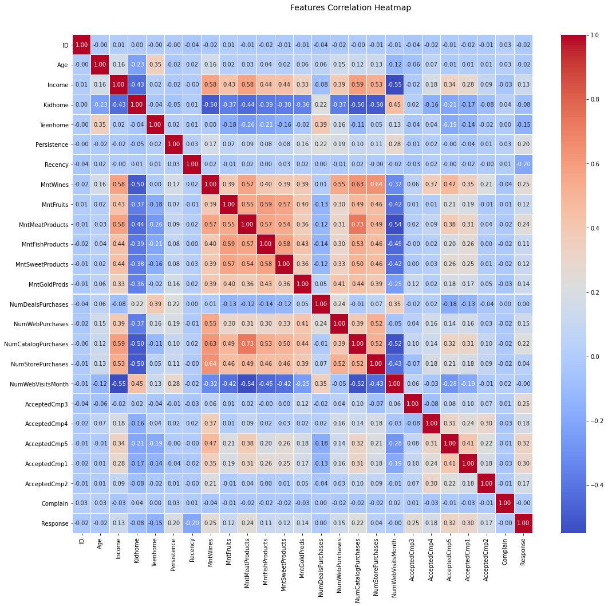
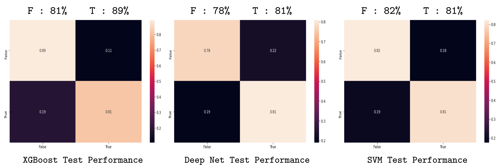
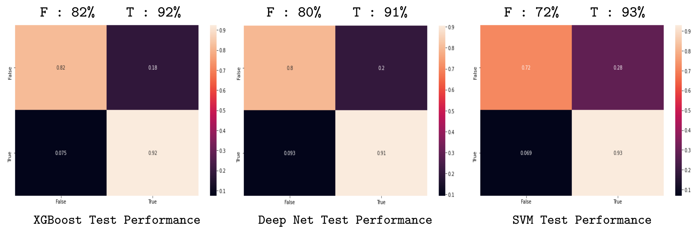

iFood Interview Project 🤞¶
Identification 🖖¶
Hello, this is just an identification to link you with my curriculum 😃. My name is Marcelo Mendes Lafetá Lima. If there are any doubts considering what was done, please contact me at marcelolafeta.nsee@gmail.com. Thank very much for the oportunity!! Without further delongs lets start…
Focus role¶
First, this work solution is to make a run for the Data Advanced Analytics role 🤓. I will present some techniques to solve the proposed problems: creating some predictors to classify the costumer as probable to accept an offer in the next campaing (which I think it is what everybody wants, i.e. to create a more effective marketing campaing).
Summary¶
I created main subjects to help segregate information in a organized manner, considering there are a lot of algorithms and analysis in this solution. In this primary page I will present the major results taken from the data, as a way to summarize the content for those who only wants a taste of what was done. Then, the more detailed information, together with the code, and the decision making to get to the results will be available on the left side menu. The detailed information in the left side menu is devided in:
Analysis Some analysis of the data to extract information regarding the complexity of the feature relations.
Practical Classifier Here a classifier using a practical algorithm called XGBoost that is showing to be pretty effective and reliable on the past few years.
Other Classifiers Some classifiers using well known algorithms to check if there is one with better results then the XGBoost.
Poor Results Techniques that or are very sassy or did not achieved interesting results.
Costumer profile¶
Here we will present the analysis on the attempt to create a costumer profile for each of the target Response. The main idea was to search for distinguishable patterns on the features that could lead to some direct relations between the costumer available information and the probability of accepting the offer of next campaing. I already will inform that no interesting information was able to be extracted from this analysis, other than more powerfull algorithms are needed to extract information from this data. The major deadlock on this approach happened when the correlation analysis were made:
{kind=link}
This show that no variable has a highly correlation with the respective output that we desire to use as reference to create costumer profiles. Notice that, this not mean that it is possible to predict the desired output. It only means that a technique that is capable of creating a more complex in a highly dimensioned geometric space, other than the 2 dimensional one that we are seeing will be needed to classify this information. Therefore the next section we already will develop those algorithms. If one wants more detail about the analysis of this section, please checkout the Analysis section on the left side menu.
Note
Realise that of course there are some high correlations between some other features, that could be very interesting to create a basic costumer profile for the marketing team. For example, create the main persona profile for guided marketing campaing. But the main objective here, as shown in the Focus role section, is to predict the probable costumer to accept the offer on the next campaing. And since I don’t have time (Masters tests period on USP, sorry about that 😅 😅, but the email did not gave me a chance to start this project latter), I will focus on building the predictors.
Predictor results¶
First lets describe breafly the problem that will be solved here. The main idea is to build a predictor capable of determining the costumers that are more probable to comply in the next campaing, by using some of their available information. For that matter, we developed three major algorithms to achieve this particular goal. All of them are classification algorithms (not considering one that is a self organizing map, but did not succeded, and therefore we will not mention here), from different machine learning libraries. The ones are here provided:
XGBoost Using the Extreme Gradient Boosting Classifier, which is a very popular algorithm today.
Tensorflow Using the keras sequential deep networks.
Scikit-learn Using the Support Vector Machines, which is a very popular algorithm in the academy.
For all of those, we developed a preprocessing pipeline to manipulate the data, by normalizing, removing non informative features, dealing with the unbalanced dataset… The first and last, were submited to a hyper parameter stochastic search algorithm to find the best set of parameters for the model that is not usual for most people, but actually it provides very interesting results. Also, the data was divided both in to training and test datasets, it is worth mentioning that, because there will be some references for them in the results.
After obtaining the models, the performance of each model was evalueted by computing the confusion matrix for each model. They were computed for two data scenarios, the first only analysing the performance of the model on test dataset:
{kind=link}
The second scenario is one considering all the dataset, not only the test, but with the training data as well:
{kind=link}
From the first figure (the test dataset scenario) we can obtain that the best model is the XGBoost, considering the True output, i.e. the XGBoost model is more accurate in predicting the costumer that is more likelly to comply with the next campaing. The second figure shows the performance of the algorithm on the second scenario. This analysis show an interesting characteristic of the model, which is its consistency. Notice that the XGBoost algorithm is the one that least change its performance indicators when the dataset beeing used as analysis change. This means that the XGBoost is the also the most consistent one, and therefore the most reliable one to be released into production.
Note
Notice that the other models are not bad. They have very good performance indicators, but this indicators change significantly from a model consistent on the output labels e.g. SVM on test: (82%, 81%), to not consistent one e.g. SVM on all: (72%, 93%). This is a possible indication of a very sensitive model, which could lead to very poorly predictions in some particular scenarios, as an example in scenarios with datasets with highly noise influence.
Practical Classifier:
Other Classifiers:
Poor attempts:
Contents: